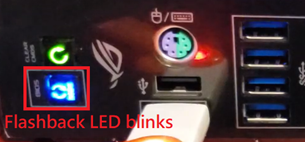
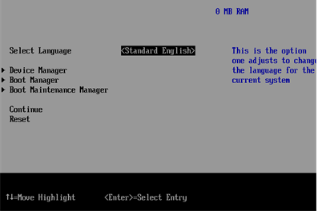
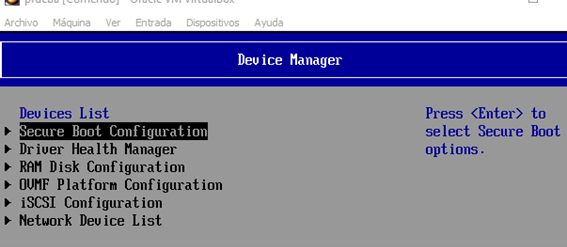
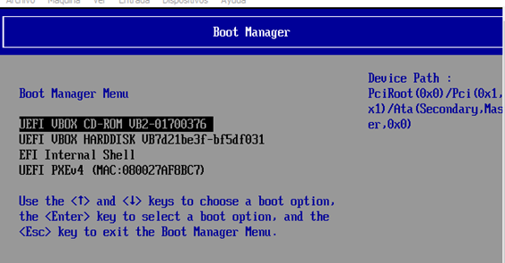
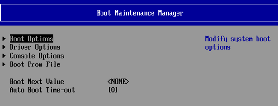
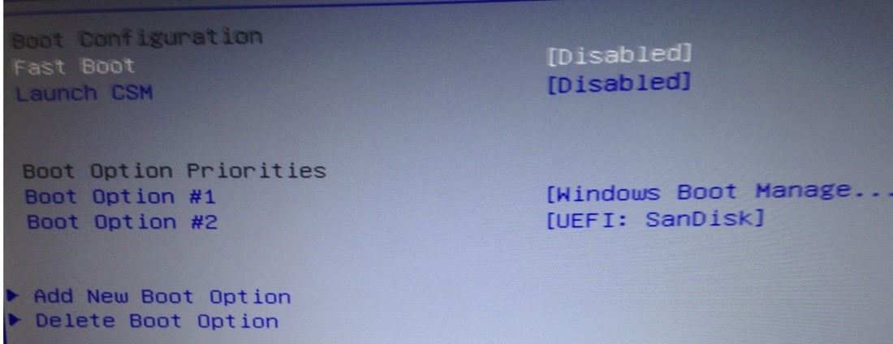
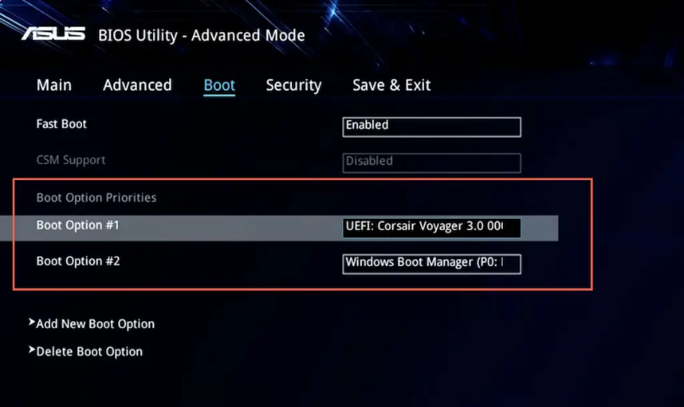

Una BIOS de tipo UEFI es la mejora mayormente en apartado visual de la Legacy, que estaba estructurada de una manera simple, para que pueda ocupar el menor espacio posible, sin embargo, la UEFI, tiene una mejora de presentación más visual
El BIOS Legacy está sin control del ratón (únicamente teclado) y ninguna función salvo seleccionar los apartados de la BIOS para que pueda ocupar el menor espacio posible, sin embargo, la UEFI, tiene una mejora de presentación con símbolos, imágenes y estadísticas más visuales con el uso disponible del ratón, y también permitiendo hacer capturas de pantalla (que se guardan en un disco externo conectado al PC.)
Un programa UEFI ocupa aproximadamente desde: 2.2 TBytes hasta 9.4 ZBytes. El programa de BIOS legacy ocupa alrededor de 32KB. Desde el punto de vista del usuario, se puede ver diferentes diferencias; La interfaz gráfica, la UEFI da una interfaz gráfica mucho más avanzada que la BIOS legacy, esta, en cambio, solo está basada en texto, facilitando la navegación. La UEFI ofrece funcionalidades adicionales, como el secure boot, que este hace un arranque seguro, sin que haya virus que ataquen al iniciar el ordenador. También se encuentra la opción de actualizar el firmware (BIOS) desde el entorno UEFI.
El secure boot es aquella opción activable y desactivable desde la BIOS que se asegura de proteger el proceso de arranque, asegurando que solo se ejecuten y carguen aquellos componentes de software confiables durante el inicio del sistema operativo. Esta opción es útil para prevenir ataques de malware o incluso ransomware.
Dual BIOS proporciona la posibilidad de tener dos chips integrados en nuestra placa base. Uno funciona como BIOS principal y el otro como una copia de seguridad o backup de la configuración de fábrica. De modo que, si la principal falla, la secundaria toma el control y funciona automáticamente.
MBR es la tabla de particiones (índice que divide el espacio de almacenamiento en distintas secciones con características propias) tradicional que soporta los sistemas operativos más antiguos, mientras que GPT es un nuevo sustituto que no tiene límites en cuanto al tamaño del disco y el número de particiones que se pueden crear. En un disco duro con GPT se pueden realizar hasta 128 particiones, y con un MBR se pueden hacer hasta cuatro particiones primarias.
Es una tecnología de Intel que le permite cambiar fácil y rápidamente entre diferentes configuraciones de la memoria RAM, las que incluyen velocidades más altas que la estándar. Si no está bien configurado, puede afectar con el rendimiento de la RAM, puede provocar inestabilidad en el sistema, sobrecalentamiento o una posible incompatibilidad con la placa base. La información del XMP se puede encontrar en la ficha técnica de la placa base.
La opción virtual technology de la BIOS sirve para poder iniciar máquinas virtuales, al activar la virtualización, este da accesos a poder utilizar diferentes sistemas operativos como Linux.
>Mediante un código de pitidos específico, ya que puede haber una variedad de pitidos con diferentes significados.
El código de pitidos que es igual en las 3 BIOS es: 1 pitido largo seguido de 2 cortos; normalmente este suele indicar problemas con la tarjeta gráfica/video.
La tarjeta POST es una herramienta que permite visualizar los códigos POST para que de esta manera se puedan detectar con facilidad los elementos del Hardware que puedan causar algún problema en el momento de encender la máquina. Estas tarjetas se insertan en las ranuras de expansión de tipo PCI o ISA.
Q-Code 01: El código 01 te avisa de que hay problemas
Q-Code 09: Este código significa que la placa base está realizando la comprobación y ha llegado a configurar la RAM.
Q-Code 31: Este código significa que la memoria está instalada, pero hay algún problema con ellas.
Q-Code 55: Este código significa que la memoria no está instalada.
Q-Code 58: La CPU ha fallado a la hora de testear o puede haber un error en el cache.
Q-Code 9A: Hay un problema con la inicialización de USB.
Q-Code A9: Indica que hay un problema en el inicio del proceso del setup
La función principal de USB BIOS flashback es permitir que la BIOS de la placa se actualice sin tener que iniciar el sistema. También permite al usuario actualizar o arreglar cualquier error con la BIOS.La forma en la que funciona este sistema es; primero de todo, lo que se ha de hacer es adquirir la BIOS, mediante los archivos oficiales del distribuidor. Posteriormente se copia el archivo de la BIOS a un USB formateado, y se conecta a un Puerto USB especifico que se encuentra designado en la placa base.
Ejemplo:
El Q-Code logger es una función que sirve especialmente para comprobar el estado del sistema instalado. Para hacerlo primero de todo se debe tener un USB, una vez con el USB nos deberemos de dirigir a los puertos de conexión de la placa base, buscar el puerto “Q-Code Logger”, y por último presionar el botón. Una vez presionado este nos enviara unos datos que se copiaran en la memoria. Todo esto se puede llevar a cabo mientras que el ordenador esta apagado.
Sí, se puede entrar, para poder entrar en una BIOS de máquina virtual se tiene que entrar y pulsar F10, nos saldrá esta pantalla:
En esta pantalla podemos ver 3 opciones diferentes junto con seleccionar el idioma de la BIOS. Estas 3 opciones son: device manager; para manejar los dispositivos conectados, como la antena de red, etc.
Boot manager: Este apartado sirve para manejar en que orden bootea la máquina virtual.
Boot maintenance manager: En este apartado se puede ver las opciones de booteo, de drivers, de la consola y por ultimo para bootear desde archivo.
En la opción de “Boot order” se puede como bien dice el nombre cambiar el orden de booteo, esto sirve para saber en qué orden arranca el dispositivo principal de almacenamiento. Principalmente este orden viene por defecto el disco de tu pc, pero también se puede cambiar a un pen.
Versión Legacy:
Versión UEFI:
1 – M.I.T: En esta primera pestaña, podemos ver diferentes configuraciones del pc, como la configuración de frecuencia, memoria o de voltaje, también se puede revisar la salud del pc y por último podemos ver algunos datos técnicos, como la temperatura de la CPU, cuanta RAM tiene el sistema, etc.
2 – System: En la segunda pestaña podrás acceder a diferentes opciones de la bios, junto con el idioma del sistema, la fecha y el dia del sistema y por último en que nivel de acceso has accedido a la BIOS.
3 – Bios Features: En esta opción podemos ver las opciones de booteo, algunas configuraciones, como por ejemplo la virtualización, que nos sirve para crear máquinas virtuales, y por último cambiar la contraseña de usuario y administrador.
4 – Peripherals: puedes configurar todos los puertos y dispositivos que forman parte de la placa base, como las conexiones del disco duro, los puertos USB, o las tarjetas gráficas, de red o sonido integradas.
5 - Power management: apartados de configuración diferentes para reducir de forma automática el consumo de energía cuando no se utilizan.
6 - Save & Exit: En esta última pestaña se puede tanto salir guardando, como salir sin guardar, también por última vez tenemos en que orden se va a iniciar el equipo, y por para finalizar tenemos una opción para cargar los perfiles o guardarlos.
1. Información del Sistema:
• Modelo de la placa base: Identificación del modelo y fabricante de la placa base.
• Versión de la BIOS: Número de versión y fecha de la BIOS instalado.
• Tipo de procesador (CPU): Modelo y velocidad del procesador instalado.
2. Configuración del Sistema:
• Fecha y hora: Configuración actual de la fecha y hora del sistema.
• Opciones de arranque: Configuración del orden de arranque de los dispositivos (disco duro, unidad óptica, USB, etc.).
3. Configuración de la Memoria:
• Cantidad de RAM: Información sobre la cantidad de memoria RAM instalada en la computadora.
• Configuración de memoria: Detalles sobre la configuración y velocidad de la memoria.
4. Configuración de Dispositivos:
• Detalles del disco duro: Información sobre los discos duros instalados, su capacidad y configuración.
• Configuración de la tarjeta gráfica: Detalles sobre la tarjeta gráfica integrada o dedicada.
5. Monitorización del Sistema:
• Temperatura de la CPU: Puede mostrar la temperatura actual de la CPU.
• Velocidad del ventilador: Información sobre la velocidad de los ventiladores conectados al sistema.
• Voltajes del sistema: Valores de voltaje del sistema.
• Marca: Gigabyte
• Modelo: UEFI DualBIOS
• Un pitido largo: Este pitido indica que el ordenador ha arrancado con éxito y no hay ningún problema.
• Pitidos cortos y repetidos: Significa que tienes problemas con la memoria RAM.
• Pitidos largos repetidos: Estos pitidos podrían ser problema por la tarjeta gráfica, puede ser que este mal conectada o haya algún otro problema.
• Pitidos cortos junto con uno largo: Problema con el teclado, puede ser que no sea reconocido o haya algún problema.
• Pitidos cortos intermitentes: Problema con la tarjeta de video, puede estar mal conectada o algún otro problema.
1. Base Clock (BCLK): Permite ajustar la frecuencia del reloj base, que afecta a todas las demás frecuencias del sistema.
2. Multiplier (Ratio): Permite ajustar el multiplicador del reloj para aumentar la frecuencia del procesador.
3. Voltaje del CPU (Vcore): Permite ajustar el voltaje suministrado al procesador para estabilizar el overclock y mantener la estabilidad del sistema.
4. Frecuencia de la memoria (DRAM Frequency): Permite ajustar la frecuencia de la memoria RAM.
5. Voltaje de la memoria (DRAM Voltage): Permite ajustar el voltaje suministrado a los módulos de memoria RAM.
6. Opciones de energía: Pueden incluir configuraciones relacionadas con la gestión de energía y la entrega de energía al procesador.
7. Opciones de refrigeración: Pueden incluir configuraciones para ventiladores y perfiles de refrigeración.
8. Configuraciones avanzadas: Pueden incluir configuraciones adicionales específicas del fabricante o del modelo de la placa madre.
Disco duro interno: Esta opción permite arrancar desde el disco duro interno del ordenador, donde generalmente se encuentra el sistema operativo instalado
Dispositivo USB: Permite arrancar desde un dispositivo USB conectado al ordenador, como una memoria USB o un disco duro externo.
Unidad de CD/DVD: Esta opción permite arrancar desde una unidad de CD/DVD que contenga un disco de arranque, como un CD o DVD de instalación del sistema operativo.
Otras unidades de almacenamiento: Dependiendo de la BIOS y del hardware del ordenador, puede haber opciones para arrancar desde otras unidades de almacenamiento, como tarjetas SD o tarjetas de memoria conectadas al equipo.
ACPI (Advanced Configuration and Power Interface): Permite la gestión avanzada de energía y funciones de apagado automático para ciertos componentes cuando no están en uso.
Suspend to RAM (S3) o Standby: Pone la computadora en un estado de bajo consumo de energía, manteniendo la memoria RAM activa para una recuperación más rápida.
Hibernate (S4): Guarda el estado actual del sistema en el disco duro y apaga completamente la computadora. Permite reanudar el sistema desde el estado en el que se encontraba antes del apagado.
CPU Power Management: Permite configurar opciones de gestión de energía para la CPU, como la velocidad del reloj dinámica, la reducción de voltaje y la suspensión de núcleos no utilizados.
Wake-on-LAN (WoL): Permite que la computadora se encienda desde un estado de bajo consumo de energía cuando recibe un paquete de red.
Configuración de la velocidad del ventilador: Algunas BIOS permiten ajustar la velocidad del ventilador según la temperatura del sistema para equilibrar el rendimiento y la eficiencia energética.
Configuración de la frecuencia del reloj del sistema (FSB): Puede permitir ajustar la frecuencia del reloj del sistema para optimizar el rendimiento y el consumo de energía.
Configuración de USB Power: Permite habilitar o deshabilitar la alimentación de energía a través de los puertos USB cuando el sistema está apagado.
Configuración de gráficos integrados: Si hay una GPU integrada, puedes ajustar la configuración para ahorrar energía cuando no se requiere un rendimiento gráfico intensivo.
Para entrar a la BIOS en portátil depende de la marca, para acceder a esta, lo que se ha de hacer es en el arranque de tu sistema operativo se ha de pulsar la tecla seleccionada por tu fabricante, las más comunes pueden ser: F1, F2, F10, F11, F12, ESC o DELETE.
La BIOS de portátil primero de todo tienen una página principal, en este caso, podemos configurar diferentes opciones, como, por ejemplo: Boot priority: En que orden se detecta los aparatos de almacenamiento, por ejemplo, en el caso habitual el disco iría en primera opción para cargar nuestro sistema operativo. Contraseña de administrador:En esta opción podremos configurar la contraseña de administrador y del usuario para la BIOS.
Main: En esta primera página lo que podemos ver es información del equipo y de la BIOS, como la versión de esta, nuestro procesador, la memoria RAM instalada, el número de serie, etc
Advanced: En la segunda página podemos encontrar configuraciones como por ejemplo de internet, sobre la configuración de USB, Sata y de los gráficos.
Boot: En la página de “Boot” podemos encontrar las configuraciones para el inicio del equipo, como por ejemplo el “fast boot”, y en qué orden queremos que se inicie el boot.
Security: En el último apartado podemos encontrar las opciones de seguridad, en este caso, hay diferentes configuraciones que necesitan de una contraseña de usuario y administrador.
Por último, podemos encontrar la zona de guardar y salir, en esta podemos hacer efectivos los cambios y proceder a iniciar el sistema.
Interfaz de Usuario:
• Torre: Puedes encontrar que las BIOS de las torres tienen interfaces más extensas y complejas, ya que a menudo hay más espacio en la pantalla y periféricos como teclado y ratón para facilitar la interacción.
• Portátil: Las BIOS en portátiles a menudo tienen interfaces más simplificadas, ya que se adaptan a pantallas más pequeñas y la interacción suele realizarse a través del teclado.
Opciones de Energía:
• Torre: Las configuraciones de energía en una torre pueden variar y depender del hardware específico. Puedes tener más opciones relacionadas con el consumo de energía y el rendimiento.
• Portátil: Las BIOS de portátiles a menudo incluyen configuraciones específicas de administración de energía para optimizar la duración de la batería y el rendimiento en movilidad.
Configuraciones de Pantalla y Gráficos:
• Torre: Las opciones relacionadas con la tarjeta gráfica pueden ser más variadas en una torre, ya que a menudo se pueden instalar tarjetas gráficas dedicadas.
• Portátil: La BIOS de un portátil puede tener opciones específicas relacionadas con la configuración de la pantalla integrada y la gestión de gráficos, pero puede ser más limitada que en una torre.
Opciones de Arranque y Almacenamiento:
• Torre: Puedes tener más opciones de arranque y configuración relacionadas con unidades de almacenamiento, especialmente si hay varias unidades conectadas.
• Portátil: Las opciones de arranque pueden centrarse más en unidades internas y dispositivos externos comunes, ya que los portátiles tienden a tener menos espacio para unidades adicionales.
Gestión Térmica y Refrigeración:
• Torre: Las configuraciones relacionadas con ventiladores y control térmico pueden ser más extensas debido al mayor espacio para soluciones de enfriamiento avanzadas.
• Portátil: La BIOS de un portátil puede incluir configuraciones específicas de refrigeración para adaptarse a las limitaciones de espacio y energía.
Seguridad y Protección:
• Torre: Puedes encontrar opciones de seguridad más extensas en una torre, como configuraciones avanzadas de arranque seguro y administración de contraseñas.
• Portátil: La BIOS de un portátil puede tener características adicionales relacionadas con la seguridad, como la gestión de contraseñas de inicio de sesión y opciones antirrobo.